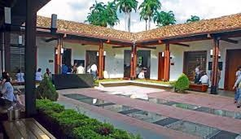
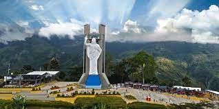
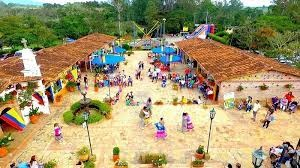

Catedral Metropolitana de la Sagrada Familia

Es uno de los templos religiosos más importantes de la ciudad, su imponente
infraestructura que incluye una cúpula amarilla y verde, ocupa un espacio total
de 72,20 m de largo y 32,50 de ancho. La catedral comprende tres cuerpos: un altar
mayor con una altura interior de 11,73 m, y dos altares laterales. Además, tiene 10
columnas en las naves laterales con acceso directo a la calle. El techo se realizó
a través de un acabado artesanal en estuco y metal.
Parque Santander

Es un lugar histórico, oficialmente se inaugura en 1925. Es un parque que presenta una serie de caminos para poder dar un paseo, sentarse y también admirar el entorno natural con el que se encuentran los visitantes. Se construyó para homenajear al llamado Hombre de las Leyes Francisco de Paula Santander y este lugar se le conoce como parque o Plaza Santander. Además de la variedad de flora de este parque es interesante destacar alguna que otra fuente, esculturas.
La Casa del Libro Total

Es un sitio en donde se conservan crónicas, anécdotas y relatos sobre la historia de Bucaramanga. Se ubica en el centro de la ciudad y a pocos minutos caminando de la Catedral de La Sagrada Familia, en una casa colonial que se restauró para convertirse en un centro cultural y de tecnología. Es aquí, donde además se creó la biblioteca digital gratuita “El libro total”, un repositorio digital que cuenta con más de 60.000 títulos de diversas categorías como imágenes, literatura y música. Una iniciativa que apoya la constante misión de La Casa del Libro Total: recuperar el Patrimonio Cultural de la comunidad hispanohablante.
Parque Nacional del Chicamocha

Ubicado en la vía Bucaramanga - San Gil, a 54 km de la capital del departamento de Santander, construido sobre el Cañón del Chicamocha, aprovechando sus riquezas naturales e históricas. Es un parque temático, y es uno de los pocos parques naturales de Colombia dedicados al ecoturismo, siendo por tanto uno de los sitios turísticos más importantes del país. Fue abierto al público el 2 de diciembre de 2006. Tiene una extensión de 256 hectáreas, y comprende un conjunto urbanístico conformado por diferentes elementos y lugares que representan la cultura santandereana.
Ecoparque Cerro del Santísimo

Se ubica en la Vereda Helechales, Floridablanca, área metropolitana de Bucaramanga.
Es un sitio de peregrinaje, especialmente en Semana Santa. Se distingje por poseer una escultura de Jesús de Nazaret de 35 m de alto incluido su pedestal de 6 m.
Cuenta con un sistema de teleférico de 1.380 m para acceder al parque en 5 minutos desde la Hacienda La Esperanza (antigua casona ubicada en los alrededores del casco urbano de Floridablanca, sede de la antigua Cervecería Clausen, la primera fábrica cervecera del país). Fue inaugurada el 20 de junio de 2015.
La Mesa de los Santos

Ubicada en el municipio de Los Santos, al que se llega tras un viaje de 62 km al sur desde Bucaramanga, se aprecia una buena vista del cañón del Chicamocha. Allí, en la Mesa de los Santos, a 1.700 msnm, se cultiva café y se observan aves como el azulejo palmero y la tángara real. También se encuentra el parador turístico Mi Colombia Querida, que recrea la arquitectura de los Pueblos Guane.
Jardín Botánico Eloy Valenzuela

Es el único del Oriente colombiano, se encuentra en el municipio de Floridablanca. Su nombre en honor al botánico, Juan Eloy Valenzuela y Mantilla. En este espacio, que cuenta con 7,5 hectáreas, cuenta con aproximadamente 3.500 especies de plantas nativas como orquídeas, heliconias, caracolíes, palmas, musgos y helechos, al igual que ardillas, mariposas, patos e iguanas, entre otros animales.